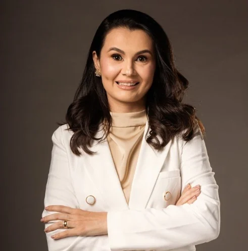

Sócia fundadora, advogada e contadora
Joseanne Costa
Cível, Família, Sucessões e Tributário
Sócia fundadora do Costa Matos Advogados, Joseanne Costa é advogada e contadora. Sua formação reúne direito tributário, conselho de administração e compliance anticorrupção, e ela também atuou na docência em pós-graduação.
Formação
- MBA em Direito Tributário pela FGV
- Curso de Conselheiro de Administração pelo IBGC
- Formação em Compliance Anticorrupção pela LEC (Legal, Ethics & Compliance)
Trajetória
- Professora de pós-graduação na disciplina de Governança Corporativa no Centro Universitário de Juazeiro do Norte (Unijuazeiro)